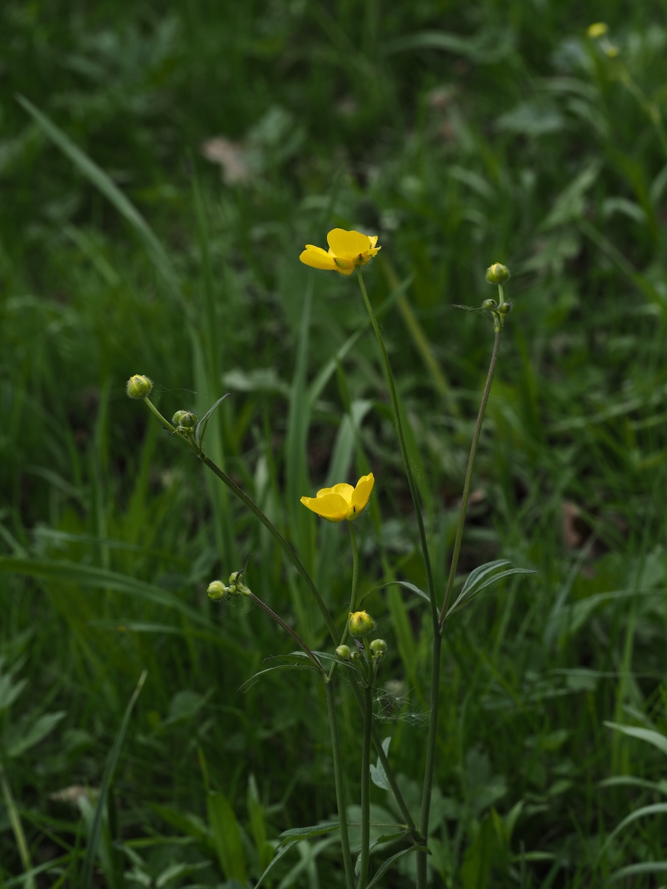
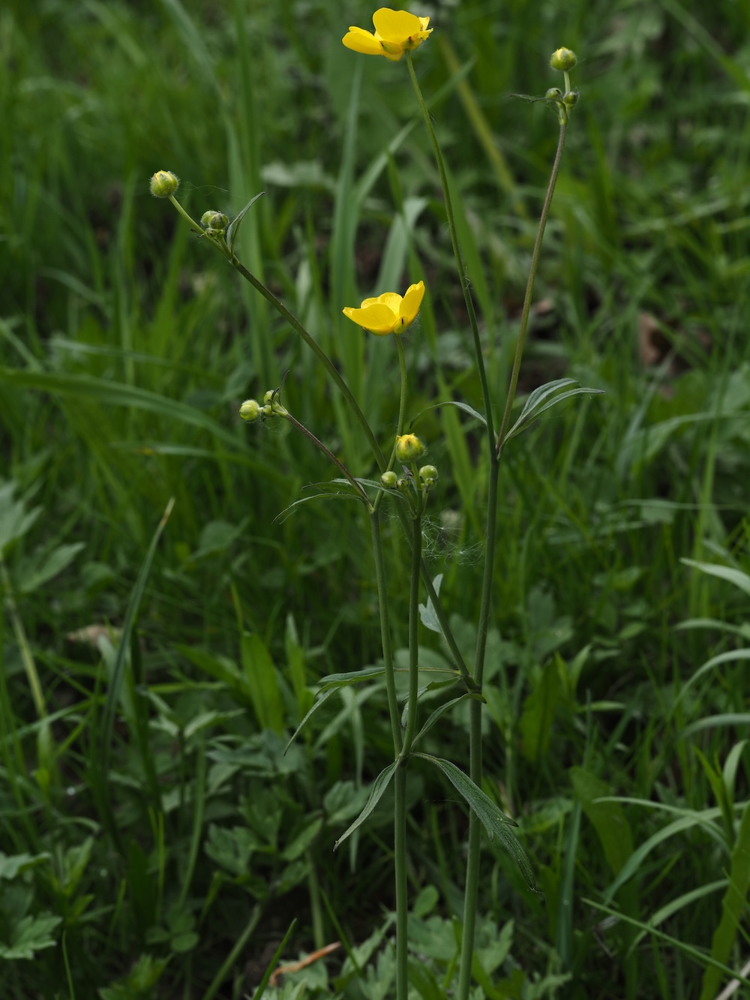

Das gelbe Wiesenmeer
Wer im Frühsommer eine extensive Wiese sieht, die wie ein gelbes Meer leuchtet: meistens Scharfer Hahnenfuß. Er ist die häufigste Wiesenpflanze Mitteleuropas und der Klassiker des extensiv genutzten Grünlands. Die fünf goldgelben Blütenblätter glänzen wie poliert — bedingt durch eine spezielle reflektierende Zellschicht in der Blütenoberfläche, die Insekten besonders gut anlockt. Ein eigener kleiner Spiegel-Effekt der Natur.
Frisch giftig, getrocknet harmlos
Frischer Hahnenfuß enthält das hautreizende Protoanemonin — Vieh meidet ihn auf der Weide. Aber: Beim Trocknen (im Heu) wird der Wirkstoff abgebaut, und das Heu ist dann unbedenklich. Praktisch für die Landwirtschaft: Eine Pflanze, die in der Wiese harmlos sein darf, weil sie erst auf der Weide gefressen wird, wenn sie getrocknet ist.